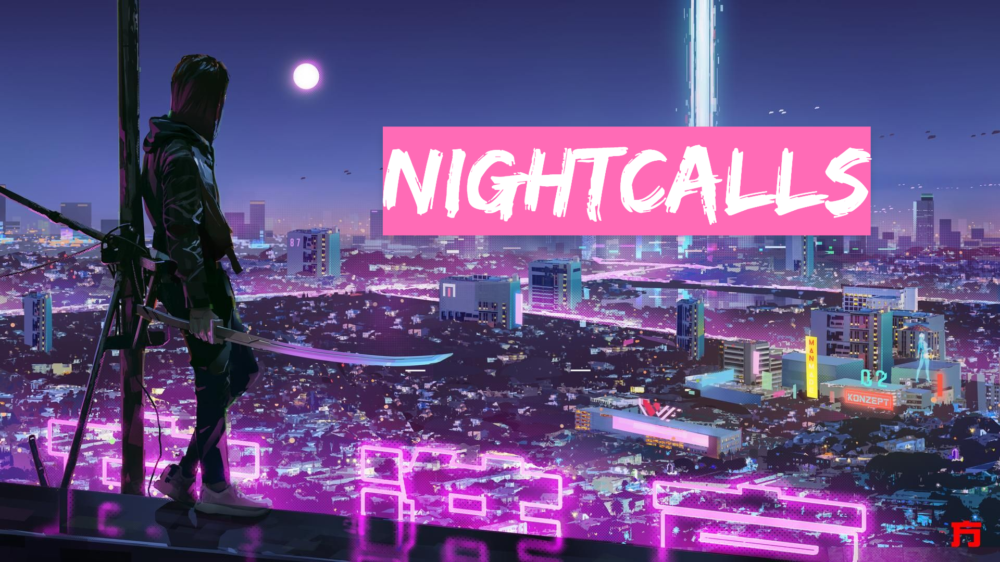
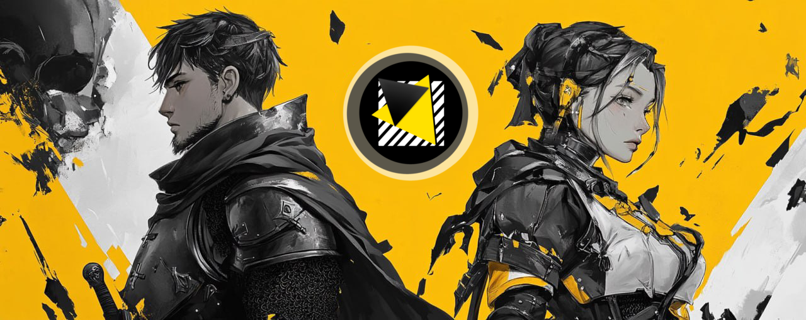

Наши проекты
1. Secret Of Grisly (JRPG)
Необычная для своего жанра JRPG, c боями-головоломками. В центре истории неоднозначный дуэт: Ганс Лихтен - известный на все королевство как Третий Мастер мечник и Лаура Хайпер - бывшая дворянка, выбравшая тернистый путь авантюристки. Ганс - мастер мечник, главнокомандующий королевской армией. Отец Ганса, Второй мастер мечник, умирает при загадочных обстоятельствах. К удивлению главного героя, все указывают на его виновность. Заклеймленный в статусе отцеубийцы, Ганс пытается найти правду в этом неоднозначном деле. Игрока ждет удивительный и насыщенный мир, где выборы и решения имеют последствия, а каждый противник требует индивидуального подхода.

2. NightCalls (Miami like)
Мрачный город, разсветающий ночью в свете неоновых ламп. Очередной звонок, и вот наш герой Эш начинает новую гонку за свою жизнь. Эш - бывший агент, ставший заложником обстоятельств. Принять звонок, устранить цель. Если не успеть до утра - игра окончена, таковы правила. Драйвовый синтвейв и быстрый экшен-геймплей, все как мы любим в играх этого жанра
3. Welcome to Cottlebery island (Quest)
Молодая пара археологов Ник и Хейли отправляются в отпуск на Солнечные острова. Их очень заинтерисовала легенда, рассказаная одним из местных старцев. Согласно легенде, в сердце острова находится Храм Времени, построенный из сверкающего черного камня, который переливается всеми цветами радуги. Внутри храма хранится Кристалл Судьбы — могущественный артефакт, способный исполнять желания, но только тому, кто был чист сердцем. Правдива ли эта легенда и уверены ли Ник и Хейли что они хорошо знают друга? Это и предстоит выяснить игроку. Добро пожаловать на Остров Котлбери!
Поддержка проекта
Спасибо всем, кто следит за нашей работой и ожидает выход наших игр. Напоминаем, что если у вас есть какие-нибудь интересные идеи и вопросы касаемо будущих проектов, то вы всегда можете написать нам в нашей группе VK. Также при желании вы можете финансово поддержать нас, это тоже можно сделать в группе. До скорых встреч!
